Alison Booth
Hack, Mary Pryor. Christian Womanhood. London: Hodder & Stoughton, 1883. Boston: Gannett, 1884.
TOC: Mary Fletcher; Mary Hall; Mary Boyles Browne; Elizabeth, Last Duchess of Gordon; Harriet Perfect; Mary Ker; Mary Calvert; Anna Backhouse; Frances Ridley Havergal.
Search OCLC WorldCat for this title.
Search Google Books for this title.
Hack, Mary Pryor. Consecrated Women. London: Hodder & Stoughton, 1880; 1892; 1893. Philadelphia: Longstreth; Toronto: Wesleyan Book Room, 1882.
TOC: Catharine of Siena; Susanna Wesley; Amelia Sieveking; Frau Trudel; Charlotte Elizabeth Tonna; Margaret Wilson; Matilda Countess von der Recke Volmerstein; Christine Alsop; Sarah A. and Elizabeth W.; Christian Eddy; Louise Schepler; Fidelia Fiske; Adelaide L. Newton; Lena Huber; Viscountess Wilhelmina Glenorchy; Isabella Graham; “Marie”.
Search OCLC WorldCat for this title.
Search Google Books for this title.
Hack, Mary Pryor. Faithful Service: Sketches of Christian Women. London: Hodder & Stoughton, 1885.
In series with other books by Hack.
TOC: Darcy Lady Maxwell; Ruth Clark; Sophie Zeller; Sarah B. Upton; Sarah B. Judson; Priscilla Johnston; Margaret Foreman; Eliza Fletcher.
Blue-green cloth binding, with gold stamped title and "By the Author of 'Consecrated Women'" (no indication of author's name) and an array of gold and red ivy leaves on the cover (and spine), befits the claim, "elegantly bound in cloth, crown 8vo., 5s.," that appears variously in the advertisements for other books in this series by Mary Pryor Hack. These four pages of advertisements at back of volume include Christian Womanhood ("Third Thousand") Self-Surrender ("Third Thousand"), and Consecrated Women ("Fifth Thousand"), as well as A Woman's Work: Memorials of Eliza Fletcher by Rev. C.A. Salmond, "With a Facsimile of Mr. Gladstone's Letter to the Author," "Fourth Edition" and Mrs. Prentiss, The Author of "Stepping Heavenward." Her Life and Letters, by Rev. G. L. Prentiss, "Sixth Thousand. With Portrait and Illustrations," each of these pages filled with excerpts of periodical reviews. Book plate: Harriet K. Howell/ from/ Mary P. Hack./ 99 Trafalgar Street. Brighton." The first two lines appear handwritten in ink, the remaining printed in script. The chapter titles consist of the subject's name followed by birth and death dates and a phrase, all but one in quotation marks. Thus: I: Born 1738, died 1810; "Under his shadow"; II: Born (about) 1741, died 1807; "Found faithful"; III: Born 1791, died 1856; Working willingly with her hands; IV: Born 1797, died 1881; "Given to hospitality"; V: Born 1803, died 1845; "Called with a holy calling"; VI: Born 1808, died 1852; "Putting on the breastplate of faith and love"; VII: Born (probably about) 1820, died 1872; "Faithful and beloved"; VIII: Born 1831, died 1883; "Brought nigh." Each chapter preceded by a title page with epigraph (Havergal, Elizabeth Barrett Browning, Henry Wadsworth Longfellow, etc.) and a second page with a block of prose, often from another person's biography. Reproduces correspondence and adds footnotes identifying correspondents or otherwise annotating.
Search OCLC WorldCat for this title.
Search Google Books for this title.
Hack, Mary Pryor. Self-Surrender: A Second Series of “Consecrated Women”. With John Greenleaf Whittier, Henry Wadsworth Longfellow. Philadelphia: Longstreth, 1883; 1893. London: Hodder & Stoughton, 1882; 1892.
TOC: Anne Askew; Isabel Brown; Helen Herschell; Anne Maurice; Emma Maurice; Elizabeth Long; Mary Jane Graham; Lydia Reid; Harriet Jukes; Susannah Gibson; Agnes Jones.
Search OCLC WorldCat for this title.
Search Google Books for this title.
Haggard, Andrew Charles Parker. Women of the Revolutionary Era; or, Some Who Stirred France. With a Photogravure Frontispiece and 16 Other Illustrations in Half-Tone. London: Paul, 1914.
British Library.
TOC: Madame Adelaide and Pompadour ; Madame de Pompadour's Practices ; Pompadour's "Cousin" The Empress ; Pompadour and Three Royal Ladies ; Pompadour as a War Minister ; Pompadour, The Abbe De Bernis and Choiseul ; The Duchesses de Choiseul, de Gramont and Julie ; The Dauphine Maria Josepha ; Madame du Barry ; The Comtesse du Barry at Court ; Madame Legros ; Jeanne de Valois, Comtesse de Lamotte ; Oliva - The Queen? ; Jeanne de Valois and the Diamond Necklace ; Marie Antoinette and Her Favourites ; Marie Antoinette and Her Amusements ; Marie Antoinette and Count Fersen ; Marie Antoinette's Execution ; Theroigne de Mericourt ; Madame Roland ; Madamde Roland Guillotined ; Madame de Stael and the Comte de Narbonne ; Madame de Stael and Benjamin Constant ; Madame de Stael and Bonaparte ; Madame de Stael, "Delphine" ; Madame de Stael and Madame de Recamier ; The Comtesse de Genlis ; Madame de Genlis' Liasion with Philippe Egalite ; Madame de Genlis an Emigree ; Charlotte Corday .
Search OCLC WorldCat for this title.
Search Google Books for this title.
Haggard, Andrew Charles Parker. Remarkable Women of France, 1431-1749. With a Frontispiece in Photogravure and 16 Other Illustrations in Half-Tone. London: Paul, 1914.
Search OCLC WorldCat for this title.
Search Google Books for this title.
Hale, Sarah Josepha [Buell]. Lessons from Women's Lives. Edinburgh, n.p., [1867]; Nimmo, [1870]. London: Nimmo, M'Farlane & Erskine, 1877. Edinburgh: Nimmo, 1880; Nimmo, Hay & Mitchel, 1889.
TOC: Joan of Arc; Anne Boleyn; Queen Elizabeth; Pocahontas; Lucy Hutchinson; Christina Montagu; Lady Mary Wortley; Mrs. Barbauld; Hannah More; Mme de Stael; Miss Edgeworth; Charlotte Corday; Lady Jane Grey; Sarah Martin; Grace Darling.
Verbatim excerpts from Woman's Record . Illustrations and decorations but not text alter in later editions.
Search OCLC WorldCat for this title.
Search Google Books for this title.
Hale, Sarah Josepha [Buell]. Sketches of American Character. Boston: Putnam & Hunt, 1829; 1830; Carter & Hendee, 1830; Hunt, 1831; Russell, Odime, 1833; Bradley, 1838. Philadelphia: Perkins, 1838; 1840; Perkins & Purves, 1843.
NOT:=history, typology. Narratives such as “The Soldier of the Revolution,” “The Village Schoolmistress.”
TOC: Walter Wilson; The Soldier of the Revolution; The Wedding and the Funeral; Ann Ellsworth; The Village Schoolmistress; The Belle and the Bleu; The Poor Scholar; The Springs; Prejudices; The Apparition; William Forbes; A Winter in the Country.
Search OCLC WorldCat for this title.
Search Google Books for this title.
Hale, Sarah Josepha [Buell]. Woman's Record; or, Sketches of All Distinguished Women, from “The Beginning” till [Until-London ed.] A. D. 1850. Arranged in Four Eras--With Selections from Female Writers of Every Age. New York: Harper, 1852, 1853. London: Sampson, Low, 1853. ---. Woman's Record: Or, Sketches of All Distinguished Women: From the Creation to A. D. 1854: Arranged in Four Eras, with Selections from Female Writers of Every Age...Illustrated by Two Hundred and Thirty Portraits, Engraved on Wood by Lossing and Barritt. 2d ed., New York: Harper, 1855. ---. Woman's Record: Or, Sketches of All Distinguished Women, from the Creation to A. D. 1868, Arranged in Four Eras. With Selections from Authoresses of Each Era. 3d ed., New York: Harper, 1870; 1872; 1873; 1874.
See How To Make It as a Woman, 100-2, 203-7.
NOT= encyclopedia. A 900-plus-page book that contains hundreds upon hundreds of entries of varying length on historical women, divided into four historical "eras": the first, from the beginning of history through the birth of Jesus Christ; the second, from the birth of Christ through the year 1500; the third, from 1500 through 1850; and the fourth, of women alive at the time of the book's publication. Also contains 229 portraits of important women.
Search OCLC WorldCat for this title.
Search Google Books for this title.
Half a Hundred Radcliffe Women: What They Have Given to the World. [Cambridge, MA]: Radcliffe College, 1900s.
A brief pamphelet that describes the lives of fifty Radcliffe graduates in 36 pages.
Search OCLC WorldCat for this title.
Search Google Books for this title.
Hall, Geoffrey F. Moths Round the Flame: Studies of Charmers and Intriguers. London: Methuen, 1935. New York: Holt, 1936; Books for Libraries, 1969.
Author identified on title page as "C.I.E., M.C./Author of 'The Guru's Ring.'" Notable Women of the Reign of Louis XIV. Contains illustrations of each of the women described, as well as a frontispiece of Louis XIV and the Palace at Versailles. Inside front cover opens to an old-style map of France ("Showing Places mentioned in 'Moths Round the Flame'"),including portions of England, Spain, and Italy with detail of Environs of Paris. Preface states that Hall has "not only made free use of other authors' researches, but has plagiarized them to such an extent that individual acknowledgment is impossible, and he has instead appended a list of works consulted in preference to encumbering the text with notes" (vii). Seems likely that much derives from Latour's series, with similar form of chapter titles, similar focus on French 17th c. Includes Genealogical Trees.
TOC: Mme de Longueville (1619-1679); Mme de Motteville (1621-1689) and Anne of Austria; Mlle de Montpensier (1627-1693): Part I. Le plus beau parti de France; Henriette, Duchesse d'Orléans (1644-1670); Mlle de la Vallière (1644-1710); Olympe, Comtesse de Soissons (1637-1708); Ninon de L'Enclos (1644-1706); Mme de Montespan (1641-1707); Mlle de Montpensier (1627-1693): Part II. La Grande Mademoiselle and Lauzun; Mme des Ursins (1642-1722); Mme de Maintenon (1638-1719).
Search OCLC WorldCat for this title.
Search Google Books for this title.
Hall, Mrs. Matthew. Lives of the Queens of England Before the Norman Conquest. 2 vols. New York: Miller, 1843. Philadelphia: Blanchard & Lea, 1854. New York: Miller; Worthington, 1859. Boston: Brown, Taggard, & Chase, 1859; Brown, 1862; Taggard & Thompson, 1863; 1864; Thompson, Bigelow & Brown, 1871. As: The Queens Before the Conquest. London: Colburn; Hurst & Blackett, 1854.
To complement Strickland, “to search amid dusty and worm-eaten records for details illustrative of the vast mine of history.” Woman's “influence” has “thrown a bright light over the dark history of the first eleven centuries of our annals” (ix).
TOC: Cartismandua; Boadicea, “The Warlike”; Gwenissa the Fair, Julia “Domina”; Victoria, Viturgia, and Hunila; St. Helena; Cartandis; Helena Ap Eudda; Rowena; Guenever I; Guenever II; Guenever III; Bertha; Ethelburga “The Silent” and Enfleda; St. Ebba, Quenburga, Surnamed “Bebba” and Saxburga; Ostrida and Werburga; Quenburga, Quenswitha, and Alfleda; Hereswytha, Sexburga, Etheldreda, Ermenberga, and Ermenilda; Domneva; Ethelburga and Fridogitha; Quendrida-Petronilla; Eadburga, Elfeda; Quenrida II; Osburga and Ethelswytha; Judith of France; Elswitha, Ethelfleda; Edwina, Elfleda, Edgifa, and Elfgifa; Ethelgiva; Elfrida; Emma of Normandy; Editha the “Good”; Editha “the Fair.”.
Search OCLC WorldCat for this title.
Search Google Books for this title.
Hall, Mrs. Matthew. Royal Princesses. London, 1848. As: The Royal Princesses of England, From the Reign of the George the First. London and New York: Routledge, 1858; 1871.
TOC: Elizabeth of England, Landgravine of Hesse Homburg, Third Daughter of George III; Charlotte Caroline Augusta, Daughter of George IV; Victoria Adelaide Mary Louisa, Princess Royal of England and Princess of Prussia; Alice Maud Mary, Second Daughter of Her Majesty Queen Victoria, and Princess Louis of Hesse-Darmstadt; Princess Helena Augusta Victoria, Third Duaghter of Her Majesty; Louise Carline Alberta.
Search OCLC WorldCat for this title.
Search Google Books for this title.
Hamaguchi, Tan. Some Striking Female Personalities in Japanese History. [London: n.p., 1903].
NOT: article from Transactions and Proceedings of the Japan Society, London, Volume 6.
TOC: Empress Jingo; Empress Komyo; Murasaki Shikibu; Hojo Masako; Hosokawa Tadaoki; Kasugano Tsubone.
Search OCLC WorldCat for this title.
Search Google Books for this title.
Hamel, Frank. The Dauphines of France. London: Paul, 1909; 1910. New York: Pott, 1910.
TOC: Jeanne de Bourbon; Marguerite de Bourgogne; Jacqueline de Bavière; Marie d'Anjou; Margaret of Scotland; Charlotte de Savoie; Marguerite of Austria; Catherine de Médicis; Mary Stuart; Marie-Anne-Christine-Victoire de Bavière; Marie-Adélaide de Savoie; Marie-Thérèse d'Espagne; Marie-Josèphe de Saxe; Marie-Antoinette; Marie-Thérèse, Duchesse d'Angoulême.
Search OCLC WorldCat for this title.
Search Google Books for this title.
Hamel, Frank. Fair Women at Fontainebleau. London: Nash; Bell; New York: Brentano, 1909.
TOC: Introduction: Visions of Fair Women; Women of the Middle Ages; the Duchesse d'Etampes Queen of Fetes; Diane de Poitiers, the Nymph of Fontainebleau; Catherine de Medicia. Mother of Three Kings; Gabrielle d'Estrees, Almost a Queen; Marie de Medicis and Henriette d'Entragues, a Queen and Her Rival; Anne of Austria, a Queen-Mother; Christina of Sweden, the Sybil of the North; Marie, Henriette, and Louise, a Trio of Fair Women; Mme de Montespan and Mme de Maintenon, Passion and Piety; The Demoiselles de Nesle and Mme de Pompadour, Four Sisters and a Siren; Mme du Barry and Marie-Antoinette, the Shame and the Pride of the Palace; Empress Josephine, a Repudiated Wife; Helena of Mecklenburg, the Bride of Fontainebleau.
-
 Mme de Pompadour
Mme de Pompadour -
 Diane de Poitiers
Diane de Poitiers -
 Gabrielle d'Estrees
Gabrielle d'Estrees -
 Marie de Mancini
Marie de Mancini -
 Anne of Austria
Anne of Austria -
 Mme de Montespan
Mme de Montespan -
 The Empress Josephine
The Empress Josephine
Search OCLC WorldCat for this title.
Search Google Books for this title.
Hamel, Frank. Famous French Salons. London: Methuen; New York: Brentano, 1908; 1909; 1911.
TOC: The Hotel de Rambouillet; La Grande Mademoiselle; Madame de Sévigné; Ninon de Lenclos; Madame de Maintenon; Madame du Deffand; Mademoiselle de Lespinasse; Madame de Stael; Madame Récamier.
-
 Julia D'Angennes- Mademoiselle Rambouillet
Julia D'Angennes- Mademoiselle Rambouillet -
 Anne of Austria
Anne of Austria -
 Mademoiselle de Montpensier
Mademoiselle de Montpensier -
 Madame de Sevigne
Madame de Sevigne -
 Madame de Grignan
Madame de Grignan -
 Ninon de Lenclose
Ninon de Lenclose -
 Madame de Maintenon
Madame de Maintenon -
 Madame de Montespan
Madame de Montespan -
 Madame de Maintenon
Madame de Maintenon -
 Madame du Deffand
Madame du Deffand -
 Mademoiselle de Lespinasse
Mademoiselle de Lespinasse -
 Madame de Stael
Madame de Stael -
 Madame Recamier
Madame Recamier
Search OCLC WorldCat for this title.
Search Google Books for this title.
Hamilton, Catherine Jane. Notable Irishwomen. Dublin: Sealy, Bryers & Walker, [1904].
TOC: The Beautiful Gunnings; Elizabeth Farren; The Countess of Cork and Orrery; Mary Leadbeater; The Ladies of Llangollen; Maria Edgeworth; Lady Morgan; Mrs. Tighe; Eliza O'Neill; Mrs. S. C. Hall; Lady Dufferin; Catherine Hayes; Lady Wilde; Julia Kavanagh.
Not in British Library.
Search OCLC WorldCat for this title.
Search Google Books for this title.
Hamilton, Catherine Jane. Women Writers: Their Works and Ways. First and second series. 2 vols., London: Ward, Lock, 1872; 1892-93. New York: Ward, Lock, & Bowden, 1893.
TOC: 1st ser. Frances Burney (Madame d'Arblay); Mrs. Inchbald; Madame de Staël; Mrs. Barbauld; Hannah More; Lady Anne Barnard; Joanna Baillie; Lady Nairn; Mrs. Radcliffe; Maria Edgeworth; Amelia Opie; Jane Austen; Lady Morgan (Sydney Owenson); Susan Edmonstone Ferrier; Mary Russell Mitford; The Countess of Blessington; 2d ser.: Mrs. Hemans; Mrs. Jameson; Fredrika Bremer; Harriet Martineau; Letitia Elizabeth Landon (Mrs. Maclean); Honourable Mrs. Norton (Lady Stirling-Maxwell); Elizabeth Barrett Browning; Mrs. Gaskell; Charlotte Brontë; George Eliot (Mary Anne Cross); Adelaide Anne Procter; Louisa May Alcott.
-
 Madame de Stael
Madame de Stael -
 Miss Burney
Miss Burney -
 Mrs. Elizabeth Inchibald
Mrs. Elizabeth Inchibald -
 Mrs. Barbauld
Mrs. Barbauld -
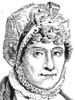Hannah More
-
Joanna Baillie
-
Maria Edgeworth
-
Amelie Opie
-
Sydney, Lady Morgan
-
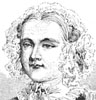Mary Russell Mitford
-
Lady Blessington
-
 Frederika Bremer
Frederika Bremer
Search OCLC WorldCat for this title.
Search Google Books for this title.
Hamilton, Cicely Mary. A Pageant of Great Women. [London]: The Suffrage Shop, 1910; Suffragette Fellowship, 1948.
TOC: Hypatia; St. Teresa; Lady Jane Grey; Madame de Stael; Madame Roland; Madame de Scudery; Jane Austen; George Sand; Caroline Herschell; Madame Curie; Sappho; Vittoria Colonna; Angelica Kauffmann; Vigee le Brun; Rosa Bonheur; Margaret van Eyck; Nance Oldfield; St. Hilda; Elizabeth Fry; Elizabeth of Hungary; Catherine of Siena; Charlotte Corday; Flora Macdonald; Kate Barlass; Grace Darling; Victoria; Elizabeth; Zenobia; Philippa; Deborah; Isabella; Catherine the Great; Tsze-Hsi-An; Joan of Arc; Boadicea; Agnes of Dunbar; Emilie Plater; Ranee of Jhansi; Maid of Saragossa; Christian Davies; Hannah Snell; Mary Ann Talbot; Florence Nightingale.
-
 Cicely Hamilton
Cicely Hamilton -
 Maud Hoffman as Madame Roland
Maud Hoffman as Madame Roland -
 Eva Balfour as Sappho
Eva Balfour as Sappho -
 Edith Craif as Rosa Bonheur
Edith Craif as Rosa Bonheur -
 Ellen Terry as Nance Oldfield
Ellen Terry as Nance Oldfield -
 Mrs. Desperd as St. Hilda
Mrs. Desperd as St. Hilda -
 Joy Chatwyn as Elizabeth Fry
Joy Chatwyn as Elizabeth Fry -
 Suzanna Sheldon as Catheirne the Great
Suzanna Sheldon as Catheirne the Great -
 Vera Coburn as the Maid of Saragossa
Vera Coburn as the Maid of Saragossa -
 Cicely as Christan Davies
Cicely as Christan Davies -
 Christopher St. John as Hannah Snell
Christopher St. John as Hannah Snell -
 Lina Rathbone as Mary Ann Talbot
Lina Rathbone as Mary Ann Talbot -
 Marion Terry as Florence Nightingale
Marion Terry as Florence Nightingale -
 Pauline Chase as Joan of Arc, Elizabeth Kirby as Boadicea, Munci Capel as Ranee Jhansi, Frances Wetherall as Agnes of Dunbar
Pauline Chase as Joan of Arc, Elizabeth Kirby as Boadicea, Munci Capel as Ranee Jhansi, Frances Wetherall as Agnes of Dunbar
Search OCLC WorldCat for this title.
Search Google Books for this title.
Hampton, William Judson. Our Presidents and Their Mothers. Introduction by the Honorable Walter E. Edge. New York: Aste, 1918. Boston and New York: Cornhill, 1922.
TOC: George Washington and Mary Ball; John Adams and Susannah Boylston; Thomas Jefferson and Jane Randolph; James Madison and Nelly Conway; James Monroe and Eliza Jones; John Quincy Adams and Abigail Smith; Andrew Jackson and Elizabeth Hutchinson; Martin Van Buren and Mary Hoes; William H. Harrison and Elizabeth Bassett; John Tyler and Mary Armistead; James K. Polk and Jane Knox; Zachary Taylor and Sarah Strother; Millard Fillmore and Phere Millard; Franklin Pierce and Anna Kendrick; James Buchanan and Elizabeth Speer; Abraham Lincoln and Nancy Hanks; Andrew Johnson and Mary McDonough; Ulysses S. Grant and Hannah Simpson; Rutherford B. Hays and Sophia Birchard; James A. Garfield and Eliza Ballou; Chester A. Arthur and Melvina Stone; Grover Cleveland and Anne Neal; Benjamin Harrison and Elizabeth F. Irwin; William McKinley and Nancy Allison; Theodore Roosevelt and Martha Bullock; William Howard Taft and Louise M. Torrey; Woodrow Wilson and Janet Woodrow; Warren G. Harding and Phoebe Elizabeth Dickerson.
NOT:=male-female collective biography. Though mixed, it belongs with “Mothers of Great Men” subgenre.
Search OCLC WorldCat for this title.
Search Google Books for this title.
Hammond, Lily Hardy. In the Vanguard of a Race. New York: Council of Women for Home Missions/Missionary Education Movement of the United States and Canada, 1922.
TOC: A Long Ascent; A Story of Service: Booker T. Washington and Robert R. Moton; A Doctor of Medicine: Dr. Charles V. Roman; Saving an Idea: Miss Nannie H. Burroughs; A City Pastor: Dr. William N. De Berry; A Believer in Happiness: Mrs. Janie Porter Barrett; A Builder of Prosperity: John B. Pierce; A Woman Banker: Mrs. Maggie L. Walker; “A Composer by Divine Right”: Harry T. Burleigh; A Light in a Dark Place: Miss Martha Drummer; Sure Foundations: Rev. James H. Dunston; A Speed of Flame: Joseph S. Cotter, Jr.
NOT:=male-female collective biography. African-American.
-
 Booker T. Washington
Booker T. Washington -
 Miss Nannie H. Burroughs
Miss Nannie H. Burroughs -
 Mrs. Janie Porter Barrett
Mrs. Janie Porter Barrett -
 John B. Pierce
John B. Pierce -
 Harry T. Burleigh
Harry T. Burleigh
Search OCLC WorldCat for this title.
Search Google Books for this title.
Hanaford, [Mrs.] Phebe Ann [Coffin]. Women of the Century / Boston Russell, 1876; 1877. Title variant (probable): Daughters of America; or, Women of the Century. Augusta, ME: True; Knowles; Des Moines, IA: Co-operative, 1882. Augusta, ME: True; Cincinnati, OH: Forshee & McMakin; Appleton; Alanson; Boston: Russell, 1883. Des Moines, IA: Woodruff, 1884. Augusta, ME: True, 1889.
Approx. 160 subjects. As in Ellet's more exclusive Queens of American Society in the same decade, chapter subheadings in Daughters of America include many general topics and many subjects' names. The exclusively female list includes Hannah Duston; Deborah Samson; Martha Washington; Lydia Maria Child; Dorothea L. Dix; Clara Barton; Sarah Hale; Margaret Fuller; Julia Ward Howe; Lydia H. Sigourney; Maria Mitchell; Harriet Hosmer; Mary A. Livermore; Frances E. W. Harper; Sojourner Truth; Elizabeth Cady Stanton; Susan B. Anthony; Frances E. Willard; Phebe A. Hanaford [herself]; Ann H. Judson; Sarah B. Judson; Mary Lyon; Charlotte Cushman; and numerous other women by occupation or type.
-
Ida Lewis
-
 Miss Emily Sartain
Miss Emily Sartain -
 Mary A. Livermore
Mary A. Livermore -
Maggie Newton Van Colt
-
Louise Woodworth Foss
-
D. D. Taylor
Search OCLC WorldCat for this title.
Search Google Books for this title.
Hanson, [Mrs.] E. R.. Our Woman Workers: Biographical Sketches of Women Eminent in the Universalist Church for Literary, Philanthropic and Christian Work. 2nd ed., Chicago: Star Covenant Office, 1882. 3d ed., Chicago: Star and Covenant Office, 1884.
Contains brief biographies of approximately 150 women, ranging from a few pages to a single short paragraph. Also contains 14 illustrations of particular women.
Search OCLC WorldCat for this title.
Search Google Books for this title.
Hansson, Laura Marholm. Modern Women. Translated by Hermione Ramsden. London: Lane, 1895. Title variants: ...An English Rendering of Laura Marholm Hansson's ‘Das Buch der Frauen's’. London: Lane; Boston: Roberts, 1896. New York, n.p., 1896. Six Modern Women: Psychological Sketches. Boston: Roberts, 1896.
TOC: The Learned Woman: Sonia Kovalevsky; Neurotic Keynotes: George Egerton; The Modern Woman on the Stage: Eleonora Duse; The Woman Naturalist: Amalie Skram; A Young Girl's Tragedy: Marie Bashkirtseff; The Woman's Rights Woman: A. Ch. Edgren-Leffler.
Also catalogued under Marholm. Endpaper ads for “The Keynote Series”: works by George Egerton, Grant Allen, Dostoievsky [sic], Gertrude Dix, etc., with covers by Beardsley.
Search OCLC WorldCat for this title.
Search Google Books for this title.
Hansson, Laura Marholm. We Women and Our Authors. London: Lane, 1898; 1899.
NOT:=literary heroines; typology. “Images of women” studies of Gottfried Keller, Paul Heyse, Ibsen, Björnson, Tolstoy, Strindberg, Maupassant, Barbey d'Aurevilly.
TOC: We Women and Our Authors; Gottfried Keller and Women; Paul Heyse and the Incommensurable; The Author in a Cul-de-sac (Isben); The High Priest of Purity (Bjornson); The Women-haters, Tolstoy and Stringberg; Maupassant and the “Fin de Siecle” Woman; Barbey D’Aurevilly on the Mystery of Woman; How do we Stand?.
Search OCLC WorldCat for this title.
Search Google Books for this title.
Hardy, Florence Emily. Eminent Women: Coloured Illustrations and Six Portraits and Pictures. Glasgow: Collins' Clear-Type Press, [1900?].
Juvenile audience. a 190-pp. book in the Noble Lives series edited by Herbert Haytens. Florence Dugdale married Thomas Hardy.
TOC: Caroline Herschel; The Princess de Lamballe; Elizabeth Fry; Elizabeth Barrett Browning; Rosa Bonheur; Agnes Weston.
Search OCLC WorldCat for this title.
Search Google Books for this title.
Hare, Christopher. [pseud. of Marian Andrews] The Most Illustrious Ladies of the Italian Renaissance. London and New York: Harper; Scribner 1904; Scribner, 1905; Harper, 1907; 1911. Williamstown, Mass: Corner House, 1972.
British Library lists 20 titles by Christopher Hare, published by various houses in London 1897-1917. Works include historical fiction, biographical histories of medieval and Renaissance Europe, two biographies of individual women, and Men and Women of the Italian Reformation (London: Stanley, 1914).
TOC: Noble Ladies of the House of Medici: Lucrezia Tornabuoni, Wife of Piero dei Medici; Clarice Degli Orsini, Wife of Lorenzo dei Medici.; Two Queens of Naples, Princesses of the House of Anjou: Giovanna I; Giovanna II.; A Group of Lombard Princesses: Beatrice d’Este, Duchess of Milan; Bianca Maria Sforza, Wife of the Emperor Maximilian; Isabella d’Este, Marchesa of Mantua; Renee of France, Duchess of Ferrara; Caterina Cornaro, Queen of Cyprus; Bianca Capello, Grand Duchess of Florence.; Great Ladies of Rome and Romagna: Caterina Sforza, Countess of Forli; Lucrezia Borgia, Duchess of Ferrara; Vittoria Colonna, Marchesa of Pescara; Elisabetta Gonzaga, Duchess of Urbino.
-
 Lorenzo de Medici
Lorenzo de Medici -
 Beatrice D'Este, Duchess of Milan
Beatrice D'Este, Duchess of Milan -
 Lucrezia Crivelli
Lucrezia Crivelli -
 Isabella D'Este, Marchesa of Mantua
Isabella D'Este, Marchesa of Mantua -
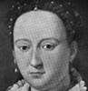Bianca Capello, Grand Duchess of Tuscany
-
 Caterina Sforza, Countess of Forli
Caterina Sforza, Countess of Forli -
 Count Baldassare Castiglione
Count Baldassare Castiglione
Search OCLC WorldCat for this title.
Search Google Books for this title.
Hargrave, Mary. Some German Women and Their Salons. London: Laurie; New York: Brentano, 1912; [1915?].
TOC: Elisabeth Goethe ; The Jewish Salons ; Henriette Herz ; Rahel Varnhagen, the German Sybil of the Nineteenth Century ; Bettina Von Arnim ; Queen Luise ; Caroline Schlegel ; Charlotte Stieglitz .
Search OCLC WorldCat for this title.
Search Google Books for this title.
Harkins, Edward Francis, and Charles Haven Ladd Johnston. Little Pilgrimages Among the Women Who Have Written Famous Books. Boston: Page, 1901; 1902. Companion to Little Pilgrimages Among the Men Who Have Written Famous Books (Boston: Page, 1902).
Compare to Hubbard's series of titles.
---. Famous Authors (Women). Boston: Page, [1906].TOC: Elizabeth Stuart Phelps; Frances Hodgson Burnett; Sarah Orne Jewett; Mrs. Burton Harrison; Charles Egbert Craddock; Anna Katharine Green; Molly Elliott Seawell; Amelia E. Barr; Mary E. Wilkins; Octave Thanet; Marshall Saunders; Kate Douglas Wiggin; Gertrude Atherton; John Oliver Hobbes; Lilian Bell; Ruth McEnery Stuart; Anna Farquhar; Pauline Bradford Mackie; Mary Johnston; Ella Anderson G. Glasgow; Bertha Runkle.
New title for the above.
-
 Elizabeth Stuart Phelps
Elizabeth Stuart Phelps -
 Frances Hodgson Burnett
Frances Hodgson Burnett -
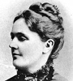Sarah Orne Jewett
-
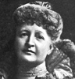Mrs. Burton Harrison
-
 Charles Egbert Craddock
Charles Egbert Craddock -
 Anna Katharine Green
Anna Katharine Green -
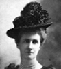Molly Elliot Seawell
-
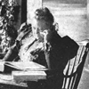Amelia E. Barr
-
 Mary E. Wilkins
Mary E. Wilkins -
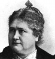Octave Thanet
-
 Marshall Saunders
Marshall Saunders -
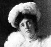Kate Douglas Wiggin
-
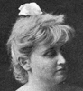Gertrude Atherton
-
 John Oliver Hobbes
John Oliver Hobbes -
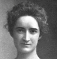Lillian Bell
-
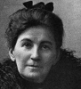Ruth McEnery Stuart
-
 Anna Farquhar
Anna Farquhar -
 Pauline Bradford Mackie
Pauline Bradford Mackie -
 Mary Johnston
Mary Johnston -
 Ellen Anderson G. Glasgow
Ellen Anderson G. Glasgow
Search OCLC WorldCat for this title.
Search Google Books for this title.
Harris, Minnie Smith. The Women of the Bible. Ojai, CA: n.p., 1934.
Search OCLC WorldCat for this title.
Search Google Books for this title.
Harrison, Eveleen. Little-Known Women of the Bible. New York: Round Table, 1936.
TOC: Old Testament: Leah; Miriam; Deborah; Michal; The Great Woman of Shunem; New Testament: Elizabeth; Anna the Prophetess; The Syrophenician Woman; Claudia Procula; Lydia of Thyatira.
Search OCLC WorldCat for this title.
Search Google Books for this title.
Hart, John Seely. The Female Prose Writers of America: With Portraits, Biographical Notices, and Specimens of Their Writings. Philadelphia: Butler, 1851; 1852; 1855; 1857; 1864; 1866; 1870.
TOC: Catherine M. Sedgwick; Eliza Leslie; Caroline Gilman; Sarah Hall; Maria J. McIntosh; Lydia H. Sigourney; Sarah J. Hale; Louisa C. Tuthill; Caroline M. Kirkland; Lydia M. Child; Emma C. Embury; Mary S. H. Schindler; Caroline Lee Hentz; Hannah Adams; Elizabeth F. Ellet; E. Oakes Smith; Louisa S. McCord; Ann S. Stephens; Frances S. Osgood; Elizabeth C. Kinney; Harriet Farley; Mary H. Eastman; S. Margaret Fuller; Harriet Beecher Stowe; Sara H. Browne; Maria J. B. Browne; Elizabeth Bogart; Jane Elizabeth Larcombe; Emily C. Judson; Sara J. Clarke; Anne C. Lynch; Mary E. Hewitt; Alice B. Neal; Clara Moore; Ann E. Porter; E. W. Barnes; Anne T. Wilbur; Eliza L. Sproat; Mary Spenser Pease; Susan Fenimore Cooper; Elizabeth Wetherell; Caroline Orne; Caroline May; Julia C. R. Dorr; Mary Elizabeth Moragne; Mary Elizabeth Lee; Mary J. Windle; Frances B. M. Brotherson.
-
 Catherine M. Sedgwick
Catherine M. Sedgwick -
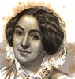Caroline M. Kirkland
-
 Caroline Lee Hentz
Caroline Lee Hentz -
Elizabeth F. Ellet
-
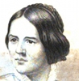Ann S. Stephens
-
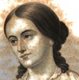S. Margaret Fuller
-
 Alice B. Neal
Alice B. Neal
Search OCLC WorldCat for this title.
Search Google Books for this title.
Hartley, Cecil B. Three Mrs. Judsons: The Female Missionaries. Rev. ed. Philadelphia: Evans, 1860. Title variant: The Three Mrs. Judsons, the Celebrated Female Missionaries. Rev. ed. Philadelphia: Potter, 1863; Keystone, [1860s?]; New York: U. S. Book, [1860s?].
Earlier edition by Hartley undiscovered. Compare Willson (1851). Prolific biographer of hunters, explorers, generals, “heroes and patriots” of South and West, Daniel Boone, and Josephine.
TOC: Ann Hasseltine Judson; Sarah Boardman Judson; Emily C. Judson.
Search OCLC WorldCat for this title.
Search Google Books for this title.
Harvey, Frances Vernon. The Six Maries: Devotional Readings. London: 1912; Skeffington, 1930-51.
TOC: Mary the Virgin; Mary of Bethany; Mary Magdalene; Mary the Wife of Cleophas; Mary the Mother of James and Joses; Mary the Mother of Mark.
Bodleian Also under F.V. Havergal or F.V.H.
Search OCLC WorldCat for this title.
Search Google Books for this title.
Harvey, Frances Vernon. Women Helpers of their Nation. By the Author of "The Six Maries," "The Highway of the Holy Cross," "Lenten Lights and Shadows," "Chimes for Life's Journey," etc. London: Skeffington, 1916.
Bodleian; Title sic. Dedication: “To the women of the empire who, in this time of warfare and distress of nations, are rendering true and loyal service to their king and country.” Each chapter title follows this form, varying by name and trait: “Deborah. (The Helper, Through Personal Influence).” Includes “Jochabed the Mother of Moses, Aaron, and Miriam,” “Hannah, the Mother of Samuel,” Deborah, Naomi, Esther, and Phoebe, a “deaconess” of “the early Church” (87-88). Under a hundred tight pages in a light, pocket-sized book bound in blue cloth, floral frame stamped in black around title in white on front cover. Punctuation as is in chapter titles.
TOC: Jochabed. (The Helper, Through the Home). ; Deborah. (The Helper, Through Personal Influence). ; Hannah. (The Helper, Through Self-Sacrifice). ; Naomi. (The Helper, Through Enduranceand Unselfishness). ; Esther. (The Helper, Through Faithfulness). ; Phoebe. (The Helper, Through the Church)..
Search OCLC WorldCat for this title.
Search Google Books for this title.
Haskell, Thomas Nelson. Women of the Bible: A Resume of Echoes of Inspired Ages. Denver: Reed-Wheelon, 1892.
Bound with: “Our presidents' wives, mothers and daughters” and “Haskell's reply to Redpath's eulogy of Jefferson Davis.” Other titles: Haskell's Women of the Bible: Wives of Presidents , etc.
With over one hundred names, divided into two sections of "Women of the Bible" and "Our Presidents' Wives, Mothers and Daughters," TOC too long to reproduce here; full text can be found at http://www.archive.org/stream/haskellswomenofb00hask/haskellswomenofb00hask_djvu.txt (10 June 2011).
Search OCLC WorldCat for this title.
Search Google Books for this title.
Haskin, Sara Estelle. The Upward Climb: A Course in Negro Achievement. New York: Council of Women of Home Missions, 1927.
Chapter titles: A Boy Who Named Himself: Booker T. Washington ; Strange Secrets: George Washington Carver ; We All Got Shoes: Jan E. Metzelinger ; Flying Spray: Matthew Alexander Henson ; A Boy with an Enchanted Voice: Roland Hayes ; Going Up, Sir!: Paul Laurence Dunbar ; Seven O'Clock, Lady!: William DeBerry ; In a Far-Away Country: Martha Drummer ; Another Daniel Who Dared: Daniel Hale Williams ; What Shall We Name Her?: Mary McLeod Bethune ; Supplementary Story Material.
NOT=male-female.
Search OCLC WorldCat for this title.
Search Google Books for this title.
Hatchard, Fanny Vincent Steele [Mrs. Goodwin Hatchard]. Mothers of Scripture for Mother's Meetings. Second Series. London: Hatchards, 1875.
First series unidentified.
TOC: Eve Tempted; Eve the Fallen; Sarah, the Mother of God’s Chosen Race; Rebekah, Mother of Jacob; Ruth, Ancestress of David; Hannah, Mother of Samuel; The Blessed Virgin Mother; The Widowed Mother of Nain; Dorcas, a Mother to the Poor; Salome, the Mother of Saints.
Search OCLC WorldCat for this title.
Search Google Books for this title.
Hays, Frances. Women of the Day: A Biographical Dictionary of Notable Contemporaries. London: Chatto & Windus; Piccadilly; Philadelphia: Lippincott, 1885.
British Library.
Search OCLC WorldCat for this title.
Search Google Books for this title.
Hayward, Charles F. Women in the Mission Field. London and Glasgow: Collins' Clear-Type Press, n.d.
A copy loaned by the Portland Center Library (Oregon) is bound in red cloth with color image on cover of an Arab on a camel in decorative harness. Book plate of Western Evangelical Seminary and stamps in purple ink: "Adelphi Pl. Mission Hall, Portland. We Preach Christ crucified." Collins' 8vo Scripture Rewards are listed before frontispiece, fourteen books listed by price and a catalog number, thus: 33. Missionary Heroines and 23. Women in the Mission Field. This indicates that the book in hand was priced at one shilling and sixpence net. Frontispiece ("In Colour," as the title page announces) shows "An Eastern Scene," a European couple under a tent in a bazaar, the lady holding red flowers that have been chosen from baskets of flowers by the kneeling vendor, in beard and turban. The gentleman's attention is on the lady, the lady's attention seems fixed on another European woman in the background, in simple dress and bonnet. Perhaps this missionary woman is handing towels or tracts to a white-bearded man draped in white. The title page vignette also shows a colorful public scene in the "East" with apparent variety of racial types in a market. Some chapters also listed in a394 Hayward. Only Mrs. Cargill's narrative is without separate chapter headings in her 8-pp. narrative. The thick pages have no numbering.
TOC: Mrs. Johnston of the West Indies ; I. The Slave at Work; II. A Missionary among the Slaves; Mrs. Bowen Thompson of Syria ; I. Early Life and Work; II. The Schools of the Mission; III. More Progress; IV. Final Success; Mrs. Gobat of Abyssinia and Jerusalem ; I. A Long Honeymoon; II. Home; III. Light in a Dark Place; IV. "Everlasting Life in Thee" ; Mrs. Robert Moffat of Kuruman ; I. Early Days and Marriage; II. At Griquatown; III. Difficulties Overcome; IV. More Toil and Then&Peace; Mrs. Margaret Cargill of the Fiji Islands ; Miss Whately of Cairo; I. Early Days; II. In a Foreign Land; III. Preaching in Cairo; IV. "Welcome, Teacher!" ; V. Called Higher.
Search OCLC WorldCat for this title.
Search Google Books for this title.
Hayward, Charles F. Women Missionaries. London: Collins' Clear-Type Press, n.d.
TOC: Mrs. Johnston of the West Indies; Mrs. Robert Moffat of Kurman; Mrs. Margaret Cargill of the Fiji Islands; Miss Whately of Cairo; Mrs. Gobat of Abyssinia and Jerusalem; Mrs. Ruthquist of Amarwara; Mrs. Bowen Thompson of Syria; Mrs. David Livingstone of Central Africa; Miss May Ellen Edwards of Shwebo; Dr. Alice Marval of Cawnpore; Miss Irene Petrie of Kashmir; Deaconess Ransome of Pekin.
These Hayward titles not found in British Library. WorldCat.
Search OCLC WorldCat for this title.
Search Google Books for this title.
Headley, Phineas Camp. Historical and Descriptive Sketches of the Women of the Bible: From Eve of the Old, to the Marys of the New Testament. Auburn, NY, and Buffalo, NY: Derby & Miller, 1850; 1852; 1853. Buffalo, NY: Miller, Orton & Mulligan, 1853; 1854; 1856. Boston: Lee & Shepard, 1850; 1876. New York: Saxton, 1859; Appleton, 1865.
Biographer of the Empress Josephine and Mary Queen of Scots.
TOC: Eve; Sarah; Rebekah; Rachel; Miriam; Deborah; Jeptha’s Daughter; Delilah; Ruth; Hannah; Queen of Sheba; Jezebel; Athaliah; The Shunamite; Esther; Elizabeth; The Virgin Mary; The Sisters, Martha and Mary; Tabitha, or Dorcas.
Search OCLC WorldCat for this title.
Search Google Books for this title.
Hedemann, Franzisca, Baroness von. Love Stories of Court Beauties. Illustrated. New York: Doran, 1917.
TOC: Court Beauties of the Second Empire; Recollections of Queen Victoria; Royal Gamblers and Their Amours; Court Society Around the Prince of Wales; The Gallantries of His Royal Highness; Brides and Wedding Gowns of the Court of St. James; A Royal Love Affair; Authors and Actors of King Edward's Reign; The Modern Spirit of King Edward's Rule; His Majesty's Last Affair of the Heart; Some Beauties of King Edward's Reign; Personal Anecdotes of Queen Mary; Some Beautiful American Women in England; Her Majesty the Queen of Roumania; Other Memories in England; Some Famous Grandes Dames; Some Recollections of Royal Children; Ministers and Prime Ministers I Have Known; The Last London Season Before the War; My Last Days in London.
-
 Franziska, Baroness Von Hedemann
Franziska, Baroness Von Hedemann -
 The Fitting Room in the House of Frederic
The Fitting Room in the House of Frederic -
 The Reception Room in the House of Frederic
The Reception Room in the House of Frederic -
 Baroness de Rameland
Baroness de Rameland -
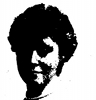Lady Winifred Benshaw
-
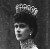Queen Mary
-
 The Royal Children
The Royal Children -
 The Countess of Warwick
The Countess of Warwick
Search OCLC WorldCat for this title.
Search Google Books for this title.
Henrici, Lois Oldham. Representative Women: Being a Little Gallery of Pen Portraits. Introduction by Ada M. Kassimer. Kansas City: The Crafters, 1913.
TOC: Mme Curie; Elsie de Wolfe; Cecile Chaminade; Lillian Nordica; Maud Powell; Fannie Bloomfield Zeisler; Maria Montessori; Hetty Green; Margaret Deland; Edith Wharton; Jane Addams; Rose O'Neill; Abastenia Eberle; Maude Adams; Julia Marlowe; Sarah Bernhardt; Ellen Key.
Epigraph: “Give us labor and the training which fits for labor. We demand this not for ourselves alone, but for the race.---Olive Schreiner.” Illustrated with photographs.
Search OCLC WorldCat for this title.
Search Google Books for this title.
Herbert, Mary Elizabeth, Baroness. Wives, Mothers, and Sisters in the Olden Time: From French, Italian, and Latin Authors. 2 vols., London: Bentley, 1876. 2nd ed., 1 vol., London: Bentley, 1885. Title variant: Wives and Mothers in the Olden Time.
British Library. NOT:=fewer than three. Includes lives of St. Paula and St. Olympias only.
Search OCLC WorldCat for this title.
Search Google Books for this title.
Hernandez, Carlos. Mujeres celebres de Mexico. San Antonio: Lozano, 1918; 1919.
NOT:=other than Anglophone. A U.S. publication in Spanish.; organized by historical period.
Search OCLC WorldCat for this title.
Search Google Books for this title.
Heroines of the Cross. Kilmarnock, Scotland: J. Ritchie; London: Hubert, 1930.
Cf. Dawson, Mundell, similar titles.
TOC: Heroines of the Cross ; The First Woman Missionary - Mrs. Judson in Burmah ; A Widow's Work - Mrs. Thompson in Syria; The Children for Christ - Fidelia Fiske in Persia; "Sitt Mariam" - Mary Louisa Whately in Egypt; A Mother in Israel - Mrs. Gobat in Abyssinia and Palestine; Fifty Years in the Mission Field - Mrs. Moffat in South America; The White Mother - Mrs. Hinderer in Yoruba; In Trials Often - Mrs. Wakefield in East Africa; Among the Cannibals - Women's Work in the South Seas; The Sole Survivor - Mrs. Jones in the West Indies; Mission Work in Tents - Mrs. Gilmour in Mongolia; The Chieftainess - Mrs. Wilkinson Among the Zulus; The Martyrs of Ku-Chang - Mrs. Stewart in China; The Story of Pandita Ramabai - The Friend of India's Widows and Orphans; Mary Slessor of Calabar.
Contains illustrations on occasional glossy pages, including both engravings and photographs, portraits and typical scenes (e.g. "Lady Missionaries Crossing an African River"), some suggesting a guide to Eastern travel. Inside front cover shows a bookplate printed (in Scotland) in gold, blue, and black, "AWARDED TO," with inscription added in ink: "Trinity Road Sunday School. [Awarded to] Dorothy Baldwin./ 2nd Class Prize/ Morning School/ 1930." Frontispiece "Mrs. Judson at the Prison Gates" shows a lady standing with a baby in arms and a hand to her eyes, leaning against heavy gates as a dark-skinned man, in hat and white cloth covering hip to knee, approaches along the street from a marketplace. Between the title page and table of contents is a page entitled "Noble Witnesses for the Faith of the Gospel," ten books published by Ritchie; a similar list of ten immediately follows table of contents: "Missionary Pioneers Who Carried the Light of the Gospel to Heathen Lands." The collective female biographies in these lists are: Heroines of the Faith (a rare book listed in WorldCat as published by Ritchie without author or clear date) and Two Missionary Heroines in Africa (Mary Slessor and Jeanie Gilchrist)--both of whom have monograph biographies listed under Boys' and Girls' Favourites; others are monographs of collections of men or men and women. The back of the book contains several glossy pages of advertisements for other books from "John Ritchie, Ltd., Publishers of Christian Literature." Sorted in declining order of price, from 3/6 to 4d. "Evangelical Wonder Books," "Good Books for Senior Scholars," "Select Gift and Reward Books," etc., a high proportion of biographies. Florence Nightingale biography listed under "Lives Worth Emulating" under "Pure and Good Reading" for two shillings; Frances Havergal also receives a monograph. Numerous paired biographies of male missionaries. As far as the titles indicate, the collective biographies of women are: Missionary Heroines of the Cross, Three Brave Women ("Mary Slessor, Mrs. Bird, etc."), Daughters from Afar, Missionary Heroines of India, Missionary Heroines of Many Lands, Heroines of the Cross in Foreign Lands. All the reading seems designed to rouse interest in life in remote countries with Evangelical mission as the motive--typified by the "Peeps at Many Lands" series.
Search OCLC WorldCat for this title.
Search Google Books for this title.
Heroines of the Faith. Kilmarnock, Scotland: J. Ritchie, 18--?, 19--?.
Published before 1930, as listed in Heroines of the Cross of that year.
Search OCLC WorldCat for this title.
Search Google Books for this title.
Heroines of Mormondom. Salt Lake City: Juvenile Instructor, 1884.
TOC: A Noble Woman's Experience / Joseph Fielding Smith; A Remarkable Life / “Homespun”; A Heroine of Haun's Mill Massacre / E.B.W.
NOT: male-female collective biography.
Search OCLC WorldCat for this title.
Search Google Books for this title.
Herrington, Walter Stevens. Heroines of Canadian History. Toronto: W. Briggs, 1909; 1910.
TOC: Marguerite de Roberval; Madame de la Tour; The Founders of the Ursuline Convent; Mademoiselle Mance; Madeleine de Vercheres; Sarah Defield; Laura Secord; Abigail Becker; Sarah Maxwell; The Unrecorded Heroines.
Search OCLC WorldCat for this title.
Search Google Books for this title.
Hewitt, Mary Elizabeth Moore. Heroines of History. New York: Cornish, Lamport, 1852; Sheldon, Lamport & Blakeman, 1855; Sheldon, 1859.
TOC: Semiramis; Nictoris; Zenobia; Boadicea; Berengaria; Laura; Joan of Arc; Isabella of Castile; Beatrice Cenci; Ann Boleyn; Lady Jane Gray; Leonora d'Este; Catherine Alexiewna; Maria Theresa; Charlotte Corday; Josephine.
This features the same subjects as a collection listed under Anna Jameson but only partly lifted from her: Lives of Celebrated Female Sovereigns and Illustrious Women . Ed. Mary E. Hewitt. London: Routledge, 1839, 1870, 1890; Philadelphia: Porter & Coates, 1870; H. T. Coates, 190-? [see below]. See Owen, Heroines of History , . Hewitt is credited with:
---. ed. Lives of Illustrious Women of All Ages. Philadelphia: Evans, 1860; Davis, Porter & Coates, 1866.Variant title of Lives of Celebrated Female Sovereigns and Illustrious Women , ed. Hewitt (some identical publication data, identical subjects). See my listing under Jameson.
Search OCLC WorldCat for this title.
Search Google Books for this title.
Hibbert, Eloise Talcott. Embroidered Gauze: Portraits of Famous Chinese Ladies. London: John Lane, 1938; Unwin Brothers Ltd., 1938. New York: Dutton, 1938; 1941. Freeport, NY: Books for Libraries, 1969.
TOC: Wives, concubines and courtesans; The most beautiful of Chinese women: Hsi Shih; A despotic empress: Lu Hou; A feminist of long ago: Pan Chao; Princesses in exile; Wu Hou: empress of the Tang dynasty; The beloved of an emperor: Yang Kuei-fei; A Taoist nun: Yu Hsuan-chi; Precious Pearl: empress of the Ming dynasty; The perfumed princess: Hsiang Fei; The last great ruler of China: Tz'u Hsi.
Search OCLC WorldCat for this title.
Search Google Books for this title.
Higgins, Sophia Elizabeth [Mrs. Napier Higgins]. Women of Europe in the Fifteenth and Sixteenth Centuries. 2 vols., London: Hurst & Blackett, 1885.
Unusual geographical scope: Denmark, Norway, Sweden, Russia, Lithuania, Hungary, Poland, Germany. History with biographical elements.
TOC: Denmark, Norway, Sweden, Etc.: Margaret of Denmark; Elizabeth of Holstein; Abbess of Elten; Ingegerd, Canute’s Daughter; Elizabeth of Brunswick; Philippa of Lancaster; Katharine of Saxony; Ingeborg of Holstein; Katharine, Charle’s Daughter. Russia, Lithuania, Hungary, Poland, etc.: Eudoxia of Suzdal; Anna of Masovia; Juliana of Olszany; Sophia of Lithuania; Daughters of Louis the Great; Mary of Hungary; Hedwig of Hungary; Anna of Poland; Hedwig of Poland; Elizabeth of Pilcaz; Sophia of Olszany; Alexandra of Lithuania.
Search OCLC WorldCat for this title.
Search Google Books for this title.
Hill, Josephine O. A Souvenir of World's Fair Women and Wives of Prominent Officials Connected with the World's Columbian Exposition. Chicago: Blocher, 1892.
See Eagle, Burdett-Coutts, for similar records of the Fair.
TOC: Mrs. Bertha M. Honore Palmer ; Mrs. Susan Gale Cooke ; Mrs. Ralph Trautmann ; Mrs. Charles Price ; Mrs. Susan R. Ashley ; Mrs. Nancy Huston Banks ; Mrs. Helen Morton Barker ; Mrs. Marcia Louise Gould ; Mrs. Gen. John A. Logan ; Mrs. M. R. M. Wallace ; Mrs. Frances B. Clarke ; Mrs. Gen. A. L. Chetlain ; Mrs. Charles Henrotin ; Mrs. William H. Felton ; Mrs. Mary Elliott M'Candless ; Mrs. Annie L. Y. Orff ; Mrs. Elizabeth C. Langworthy ; Mrs. W. Newton Linch ; Mrs. Isabella Beecher Hooker ; Mrs. Thomas W. Palmer ; Mrs. Thomas B. Bryan ; Mrs. George R. Davis ; Mrs. M. P. Handy ; Mrs. Mary E. Peabody ; Mrs. Willard Smith ; Mrs. James Allison ; Mrs. E. E. Jaycox ; Mrs. Louis Wood Robinson ; Mrs. John M. Samuels ; Mrs. William Buchanan ; Mrs. Walker Fearn .
Search OCLC WorldCat for this title.
Search Google Books for this title.
Hilton, Agnes Aubrey. Tales of the Women Saints of the British Isles. London: Wells Gardner, Darton, 1909.
TOC: Mother Hilda; The Abbess Elfleda; Saint Etheldreda; The Flight of Saint Frideswide; A Princess of Mercia; Saint Milburgh; The Widow of Glastonbury; Kieran's Little Nurse-girl; Brigit the Shepherdess; A Tale of a Saintly Queen; Saint Melangell and Her Lambs.
Gold and black stamping on red cloth: emblematic roses on cover and spine. The titles of chapters appear in large, elaborate letters with illustrations around them, illuminated-manuscript style. There are illustrations at the beginning of each chapter, and sometimes within the chapters, apparently all signed "A A H," that is by Hilton herself. Most of the illustrations depict the respective saint for the chapter, but others relate to other elements of the narrative, such as the pictures of Beowulf and Grendel in the chapter on the Widow of Glastonbury. Running headers in Gothic script; typeface and general design (book is almost square) reminiscent of pre-Raphaelites and Morris. The final pages of the book contain a table of the saints with their respective feast days; notes on their shrines, emblems, and coat-of-arms; and a small glossary and bibliography.
Search OCLC WorldCat for this title.
Search Google Books for this title.
Historical Tales of Celebrated Women. London, 1860; Burns, Oates & Washbourne, [1910-1919].
TOC: Maria Leczinska, or, The Conspiracy; Olga, Grand Duchess of Russia; Marietta Tintoret : A Tale of Venice; Isabelle of France and Richard of Bordeaux, or, The Youthful Queen; Jeanne Hachette, or, The Heroine of Beauvais.
NOT:=historical fiction.
Search OCLC WorldCat for this title.
Search Google Books for this title.
Holland, Mary A. Gardner. Our Army Nurses: Interesting Sketches, Addresses, and Photographs of Nearly One Hundred of the Noble Women Who Served in Hospitals and On Battle Fields During Our Late Civil War, 1861-1865. Boston: Wilkins, 1895. As: Our Army Nurses: Interesting Sketches and Photographs of Over . . . Boston: Loundsberry, Nichols & Worth, 1897.
TOC: Miss Mary A. Gardner Holland, Frontispiece; Dunker Church; Bombardment of Fort Sumter; National Monument, Gettsburg, Penn; Mrs. Dorothea Lynde Dix; Mary A. Livermore; Scene in Richmond after Battle of Fair Oaks; Clara Barton; Mrs. Fowle; Mary Pringle; Dr. Nancy M. Hill; Mary A. Loomis; Mrs. Emma :. Simonds; Margaret Hayes; Elizabeth B. Nichols; M. Alice Frush; Mrs. Pamelia Reid; Julia S. Tompkins; Belle Coddington; Ruth Helena Sinnotte; Elizabeth S. Ward; Lucy F. Barron; Rena L. Miner; Field Hospital, Savage Station; Vesta M.W. Swarts; Ellen Marsh; Clara B. Hoyt; Margaret Mackey; Emily M. Cone; Modernia R. Weston; Maria W. Abbey; Mrs. Wm. N. Sprague; Lucy L. C. Kaiser; Elizabeth J. Dudley; Susan M. Babcock; Elizabeth P. Hunt; Mr. S. C. Wright; Nurse Moir; Hannah C. Sheppard; Estelle S. Johnson; Mrs. Emily E. Woodley; Mrs. Mary J. Watson; Jannette Maxwell Morrill; Mrs. Elizabeth E. Ellis; Mrs. E. F. Cope; Martha A. Baker; Mrs. Emma F. Sackett; Sarah K. Clark; Jane E. Dunbar; Mary A. Stinebough Bradford; Miss Mary Venard; Mrs Elizabeth Thompson; Hanna L. Palmer; Mary M. Briggs; Laurette C. Balch; Mary A. Ellis; Louisa E. Kamp; Amanda M. Felch; Mary E. Moore; Louis H. Dunbar; Rebecca Wiswell; Mrs. Daniel Schram; Nancy M. Gross; Susan Cox; Miss Elizabeth Wheeler; Mary Perkins; Martha F. Jennison; Mrs. M. J. Buncher; Margaret Hamilton; Margaret A. Weed; Mrs. Elizabeth Lucas; Mrs. Mary F. Knowles; Betsey A. Cook; Eunice M. Brown; Mrs. Elvira Mason; Jane M. Worrall; Fannie A. Harper; Elizabeth O. Gibson; Matilda E. Morris; Mrs. Cecilia White; Mrs. L. H. Husington; Edeliza Perry; Mary E. Darling; Mrs Hannah E. Starbird; Mrs. M. J. Starbird; Mrs. M. J. Boston; Mrs. Rebecca R. Pomroy; Sophronia E. Brecklin; Elizabeth A. Hyatt; Kate M. Duncan; Adelaide E. Spurgeon; Mrs. Fannie H. Titus-Hazen; Mrs. Delia B. Fay; Sumner’s Advance at Antietem; M. V. Harkin; Mrs. J. T. Richards; Mary E. Bell; Mrs Helen E. Smith; “Mother” Ransom; “Mother” Bickerdyke; Helen Gilson; Appomatox Court House, VA; Lee’s Shattered Army.
Search OCLC WorldCat for this title.
Search Google Books for this title.
Holland, Rupert Sargent. Historic Girlhoods. 2 vols. Philadelphia: Jacobs; Macrae, Smith, 1910.
TOC: vol. I: Saint Catherine; Joan of Arc; Vittoria Colonna; Catherine de' Medici; Lady Jane Grey; Mary, Queen of Scots; Pocahontas; Priscilla Alden; Catherine the Great; Fanny Burney. vol. II: Sarah Siddons; Marie Antoinette; Josephine; Dolly Madison; Louisa of Prussia; Charlotte Brontë; Victoria; Florence Nightingale; Jenny Lind; Rosa Bonheur; Louisa May Alcott.
Frontispiece Joan of Arc. U. Virginia copy Part One, inscribed: “Dorothea David/ March, 1921/ From Daddy,” has pasted photographs on endpapers: “Joan of Arc's Home in Domremmy, France.” and “Joan of Arc—age of 18.”


Search OCLC WorldCat for this title.
Search Google Books for this title.
Holloway, Laura Carter [Langford]. The Ladies of the White House. New York: U.S. Publishing, 1870; 1872.
Listed also under Langford. Author of Famous American Fortunes and the Men Who Have Made Them (1884), An Hour with Charlotte Bronté (sic, 1882), a household manual, and several individual biographies of men. Note the adjustments in the subtitle in the following editions:
---. The Ladies of the White House: Or, in the Home of the Presidents, Being a Complete History of the Social and Domestic Lives of the Presidents from Washington to Hayes-1789-1880. Philadelphia: Bradley, 1880. ---. The Ladies of the White House: Or, In the Home of the Presidents. Being a Complete History of the Social and Domestic Lives of the Presidents from Washington to the Present Time — 1789-1881. Philadelphia: Bradley, 1881. ---. The Ladies of the White House: Or, in the Home of the Presidents: Being a Complete History of the Social and Domestic Lives of the Presidents from Washington to the Present Time. Philadelphia: Bradley, 1883; 1884. ---. The Ladies of the White House: Or, in the Home of the Presidents...Being a Complete History of the Social and Domestic Lives of the Presidents from Washington to Cleveland — 1789-1886. 2 vols. New York: Funk & Wagnalls, 1886.TOC: Martha Washington; Mrs. Abigail Adams; Martha Jefferson; Dorothy Paine Madison; Elizabeth K. Monroe; Louisa Catharine Adams; Rachel Jackson; Mrs. Emily Donelson; Sarah Yorke Jackson; Hannah Van Buren; Angelica Van Buren; Anna Symmes Harrison; Letitia Christian Tyler; Julia Gardiner Tyler; Sarah Childress Polk; Margaret Taylor; Abigail Fillmore; Mary Abigail Fillmore; Jane Appleton Pierce; Harriet Lane; Mary Todd Lincoln; Eliza McArdle Johnson; Martha Johnson Patterson; Mary Stover; Julia Dent Grant; Lucy Webb Hayes; Lucretia Rudolph Garfield; “The White House”.
Search OCLC WorldCat for this title.
Search Google Books for this title.
Holloway, Laura Carter [Langford]. The Mothers of Great Men and Women, and Some Wives of Great Men. Illustrated. New York: Funk & Wagnalls, 1883. Philadelphia: Calypso, 1883; 1887. Baltimore: Wharton, 1883; Woodward, 1889; 1891; 1892.
TOC: Mary Washington; Mother of Mendelsohn; Mother of Napoleon; Monica, Mother of St. Augustine; Abraham Lincoln's Mother; Charles Dicken's Mother; Mother of Wesley; Charles Lamb's Mother; Thackeray's Mother; Cornelia, Mother of the Gracchi; Lord Byron's Mother; Mother of Rev. John Newton; Mother of Martin Luther; Mother of Stonewall Jackson; Mother of Cowper; Mother of Goethe; Mother of the Napiers; Jean Paul Richter's Mother; Madame Necker, the Mother of Madame de Staël; Mother and wife of Shakspeare; Mother of Beethoven; Mother of Sheridan; Frances Trollope; Lady Beaconsfield; Mother of Garfield; Mother of Alexander von Humboldt; Wife of Lord William Russell; Mother of Lamartine; Milton's Wives; Mother of Carlyle; Johnson's Mother and Wife; Mothers of Antiquity; Marie Antoinette as Wife and Mother; Mother of Burns; Short sketches of some wives and mothers; Abigail Adams.
See also Pop Chart-
 Mary, the Mother of Jesus
Mary, the Mother of Jesus -
 Leah Mendelssohn Bartholdy
Leah Mendelssohn Bartholdy -
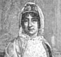The Mother of Napoleon
-
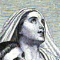The Mother of St. Augustine
-
 Sally Bush
Sally Bush -
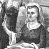Susannah Wesley
-
 Cornelia
Cornelia -
 Luther at Home
Luther at Home -
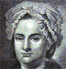Goethe's Mother
-
 Goethe's Mother Telling Stories
Goethe's Mother Telling Stories -
 Suzanne Necker
Suzanne Necker -
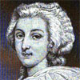Marie Antoinette
-
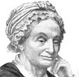The Mother of President Garfield
-
 Lady Rachel Russell
Lady Rachel Russell -
 The Mother of Lamartine
The Mother of Lamartine -
Marie Antoinette
-
The Mother of John Q. Adams
Search OCLC WorldCat for this title.
Search Google Books for this title.
Holloway, Laura Carter [Langford]. The Woman's Story, as Told by Twenty American Women. New York: Alden, 1888; 1889; 1892. Troy, NY: Nims & Knight; New York: Hurst, 1889.
NOT:=fiction. Anthology of fiction, with biographical sketch and portrait of each author.
TOC: Harriet Beecher Stowe; Harriet Prescott Spofford; Rebecca Harding Davis; Edna Dean Proctor; Marietta Holley; Augusta Evans Wiloson; The Trial of Beryl; Louise Chandler Moulton; Celia Thaxter; Abba Gould Woolson; An Evening’s Adventure; Mary J. Holmes; Margaret E. Sangster; Olive Thorne Miller; Elizabeth W Champney; R Dorr; Marion Harland; Louisa May Alcott; Ella Wheeler Wilcoz; Dave’s Wife; Rose Terry Cooke.
Search OCLC WorldCat for this title.
Search Google Books for this title.
Holt, Sarah Emily. Memoirs of Royal Ladies. 2 vols. London: Hurst & Blackett, 1861.
TOC: Subjects identified by lengthy titles and domains, abbreviated here: TOC: vol. I: Ela de Rosmar, Countess of Salisbury; Alicia de Lacy, . . . Dame L'Estrange and de Frenes; Joan Plantagenet; Constance de Navarra, Queen of Castilla; Jane Beaufort, Queen of Scotland; Jeanne de Valois, Queen of France; Juana de Navarra, Queen of Spain; Marguerite von Hapsburg, Queen of France; vol. II: Marguerite von Hapsburg [continued]; Charlotte Margueritte de Montmorency, Princess of Condé; Marie Casimire Clementine Sobieski, titular Queen of England. Oldfield.
Search OCLC WorldCat for this title.
Search Google Books for this title.
[Hope, Eva]. Queens of Literature of the Victorian Era. By the Authors of “Our Queen,” “Life of General Gordon,” etc. London: Walter Scott, 1886.
TOC: Mary Somerville [“The Queen of Science”]; Harriet Martineau [ “the Political Economist and Friend of the People”]; Elizabeth Barrett Browning [ “The English Sappho”]; Charlotte Bronte [ “The Moorland Romancist”]; George Eliot [ “The Greatest Novelist of the Reign of Our Queen”]; Felicia Hemans [ “The Poet of Womanhood”].
Frontispiece Mary Somerville. Catalogue of Popular and Standard Books including Science Manuals, Illustrated Novels, Reward Books, etc., etc. in Handsome bindings, suitable for Prizes and General Presents. New series of the Canterbury Poets; New Series of Bijou Books; new Series of Classics, etc. etc. 1886. [with specimen illustrations]. Our Queen: A Sketch of the Life and Times of Victoria. By the Author of “Grace Darling”. Life of General Gordon. With Photographic Portrait taken at Khartoum. By the Authors of “Our Queen,” “Grace Darling,” etc. [note plural] also New World Heroes: Lincoln and Garfield by same “authors”; elsewhere in catalogue, these works are credited to Eva Hope. Catalogue includes series of Memorable Men of the Nineteenth Century. Famous Engineers by J.F. Layson. Christian Heroines by Daniel C. Eddy [missionaries] Select Christian Biographies Rev. James Gardner. Reward Books include bios of George Stephenson, Robert Stephenson, Garbaldi, Felix Neff. The Every-Day Help Series for Young Men and Young Women. How to Do Business --to Behave --To Write --to Debate. Books for Children; Standard Novels (without authors, some unfamiliar titles today).
Search OCLC WorldCat for this title.
Search Google Books for this title.
Hopkins, Tighe. The Women Napoleon Loved. London: Nash; Leipzig: Tauchnitz; Boston: Little, Brown, 1910.
Bodleian See Barton re Lincoln.
TOC: I: Introductory: Napoleon and the Feminine Tangent; II: Episodes of Youth and Adolescence; III: Josephine; IV: The Queen of the East; V: The Singer of Milan; VI: "Georgina" ; VII: The Feminine under the Empire; VIII: The Women of the Family; IX: The Femmes Fortes; X: The Mystery of Madame X; XI: Walewska; XII: Marie Louise; XIII: The "Tragi-Comedy" of the Rock.
Search OCLC WorldCat for this title.
Search Google Books for this title.
Hoppner, John; Charles Wilkins, and Andrew White Tuer. Bygone Beauties: A Select Series of Ten Portraits of Ladies of Rank and Fashion....From Paintings by John Hoppner...Engraved by Charles Wilkins; Annotated by Andrew W. Tuer. London: Leadenhall; New York: Scribner, 1883; Leadenhall: 1891. London and Melbourne: Eyre & Spottiswoode; Simpkin, Marshall, Hamilton, Kent; New York: Scribner's, n.d.
TOC: Lady Charlotte Duncombe; Viscountess St. Asaph; Lady Charlotte Campbell; Jane Elizabeth, Viscountess Andover; Lady Gertrude Villiers; Lady Langham; The Countess of Euston; Lady Catherine Howard; The Duchess of Rutland; Lady Gertrude Fitzpatrick.
WorldCat: London, Field & Tuer [etc.]; New York, Scribner & Welford, n.d. See Willing. Hoppner (1758-1810) emulated Reynolds, popular portrait painter. Reproducing his “A Select Series of Portraits of Ladies of Rank and Fashion” (n.p.), engraved by Wilkins and issued in five numbers, 1797-1803, purchased (1883?) as part of Hoare's Stourhead Library (n.p. prefatory text by Tuer, expert on engraving).
Search OCLC WorldCat for this title.
Search Google Books for this title.
Horner, Joyce Mary. The English Women Novelists and Their Connection with the Feminist Movement (1688-1797). Smith College Studies in Modern Languages, 11. Northampton, MA: [Dept. of Modern Languages, Smith College], 1929-1930.
Chapter titles: Part I: The Change in Position of the Woman Novelist, 1688-1797 ; Chapter I: "The Fair Triumvirate of Wit" ; Chapter II: The "Lady" Novelist ; Chapter III: The Period of the Bluestockings ; Part II: "The Qualities of Females" ; Introduction ; Chapter I: The Beginnings of the Psychological Novel ; Chapter II: The Evolution of the Heroine ; Conclusion .
Revised M. A. thesis.
NOT:=literary history more than biography. The female novelists studied for this authoritative and well written thesis include Penelope Aubin, Jane Austen, Jane Barker, Aphra Behn, Frances Burney, Sarah Fielding, Eliza Haywood, Elizabeth Inchbald, Charlotte Lennox, Mary de la Riviere Manley, Ann Radcliffe, Clara Reeve, Madeleine de Scudery, Frances Sheridan, and Charlotte Smith. Chapters also discuss various women writers including Dorothy Osborne, the Duchess of Newcastle. The biographical material on each is brief, as this is a study of the career authors."
Search OCLC WorldCat for this title.
Search Google Books for this title.
Horsley, Reginald. Women of Worth in the Victorian Era: Being Brief Biographies of Queen Victoria, Florence Nightingale, and Isabella Bird. Chambers's Supplementary Readers. London: Chambers, 1912.
Bodleian
Search OCLC WorldCat for this title.
Search Google Books for this title.
Horton, Edith. A Group of Famous Women: Stories of Their Lives. Boston and New York: Heath, 1914.
TOC: Joan of Arc; Dorothy Payne Madison; Elizabeth Fry; Lucretia Mott; Mary Lyon; Dorothea Dix; Margaret Fuller; Harriet Beecher Stowe; Maria Mitchell; Lucy Stone; Julia Ward Howe; Queen Victoria; Florence Nightingale; Susan B. Anthony; Mary A. Livermore; Clara Barton; Harriet Hosmer; Louisa M. Alcott; Frances E. Willard; Women on the Battlefield and in Pioneer Life.
-
 Joan of Arc
Joan of Arc -
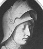Joan of Arc
-
 Dorothy Payne Madison
Dorothy Payne Madison -
 Lucretia Mott
Lucretia Mott -
 Mary Lyon
Mary Lyon -
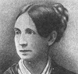Dorothea Dix
-
 Margaret Fuller D'Ossoli
Margaret Fuller D'Ossoli -
 Harriet Beecher Stowe
Harriet Beecher Stowe -
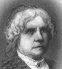Maria Mitchell
-
 Lucy Stone
Lucy Stone -
 Julia Ward Howe
Julia Ward Howe -
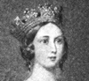Queen Victoria
-
 Florence Nightingale
Florence Nightingale -
 Susan B. Anthony
Susan B. Anthony -
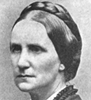Mary A. Livermore
-
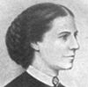Clara Barton
-
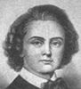Harriet Hosmer
-
 Louisa May Alcott
Louisa May Alcott -
 Frances Willard
Frances Willard -
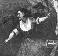Molly Pitcher
Search OCLC WorldCat for this title.
Search Google Books for this title.
Horton, Robert Forman. Women of the Old Testament: Studies in Womanhood. New York: Whittaker; Herrick, 1897. London: Service & Paton, 1898; 1900. Nisbet, 1897; 1899; 1900; 1911.
TOC: Eve; Sarah; Rebekah; Rachel; Potipahar's Wife; The Daughter of Pharaoh; Rahab; Ruth; Deborah and Jael; The Witch of Endor; Rizpah; Michal; Abigail; The Queen of Sheba; The Shulammite; The Shunammite (2 Kings IV.); The Little Captive Maid; Huldah; The Wives of the Prophets; Esther.
In the British Library
Search OCLC WorldCat for this title.
Search Google Books for this title.
Houssaye, Arsène. Philosophers and Actresses. New York: Redfield, 1852; 1853; Dillingham, 1886.
TOC: The Wife of Scarron; Voltaire and Mademoiselle de Livey; Cornelius Schut and Elizabeth Van Thurenhoudt; Chamfort, the Friend of Mirabeau; Abelard and Heloise; Three passages in the life of Madame de Parabere; Jacques Callot; Ralph and Gabrielle; The hundred and one pictures of Tardif; Hands full of roses, full of gold, and full of blood; Prudhon; Mademoiselle de Marivaux; The Daughter of Sedaine; Plato the divine.
NOT:=male-female collective biography.
Search OCLC WorldCat for this title.
Search Google Books for this title.
How, Frederick Douglas. Noble Women of Our Time. London: Isbister, 1901.
TOC: Miss. Daniell of Aldershot; Mrs. Sydney Lear; Miss Anne Ray; Mrs. Ward of Whittington; Miss Anne Mackenzie; Mrs. Wightman of Shrewsbury; The Hon. Mrs. James Stuart-Wortley; Mrs. Nassau Senior; Miss Agnes Jones; Augusta Countess of Dartmouth; Miss Elizabeth Gilbert; Maria Houghton.
Search OCLC WorldCat for this title.
Search Google Books for this title.
Howe, Julia Ward, ed., with Mary Hannah Graves. Sketches of Representative Women of New England. Compiled by Mary Elvira Elliott, Mary A. Stimpson, and Martha Seavey Hoyt, and others. Illustrated. Boston: New England Historical, 1904.
This long book (600+ pages) contains brief biographies of several hundred women, with occasional photographs. A PDF of it can be found online at archive.org (28 June 2011).
Search OCLC WorldCat for this title.
Search Google Books for this title.
Howitt, Mary, ed. Biographical Sketches of the Queens of England, from the Norman Conquest to the Reign of Victoria; or, Royal Book of Beauty. Illustrated by Twenty-Eight Highly-Finished Portraits on Steel. London: Bohn, 1851; 1856; 1862; Virtue, 1862; 1866; ["Thirty-One . . . Portraits"], 1868; Rutter, 1865. Chicago: Wasson, 1901.
TOC: Matilda of Flanders, Queen of WIlliam the Conqueror; Matilda of Scotland, Queen of Henry I; Adelais of Louvaine, Second Queen of Henry I; Matilda the Empress, Daughter of Henry I; Matilda of Boulogne, Queen of Stephen; Eleanor of Aquitaine, Queen of Henry II; Berengaria of Navarra, Queen of Richard I; Isabella of Angouleme, Queen of John; Eleanor of Provence, Queen of Henry III; Eleanor of Castille, Queen of Edward I; Marguerite of France, Second Queen of Edward I; Isabella of France, Queen of Edward II; Philippa of Heinault, Queen of Edward III; Anne of Bohemia, Queen of Richard II; Isabella of Valois, Second Queen of Richard II; Joanna of Navarre, Queen of Henry IV; Katherine of Valois, Queen of Henry V; Margaret of Anjou, Queen of Henry VI; Elizabeth Woodville, Queen of Edward IV; Anne of Warwick, Queen of Richard III; Elizabeth of York, Queen of Henry VII; Katherine of Aragon, Queen of Henry VIII; Anne Boleyn, Second Queen of Henry VIII; Jane Seymour, Third Queen of Henry VIII; Anne of Cleves, Fourth Queen of Henry VIII; Katherine Howard, Fifth Queen of Henry VIII; Katherine Paar, Sixth Queen of Henry VIII; Lady Jane Grey; Mary the First, Queen Regnant; Elizabeth, Queen Regnant; Anne of Denmark, Queen of James I; Henrietta Maria, Queen of Charles I; Katherine of Braganza, Queen of Charles II; Mary Beatrice of Modena, Queen of James II; Mary the Second, Queen of William III; Anne, Queen Regnant; Caroline of Anspach, Queen of George II; Charlottes of Mechlenberg Strelitz, Queen of George III; Caroline of Brunswick, Queen of George IV; Adelaide of Saxe Meiningen, Queen of William IV; Victoria.
See How To Make It as a Woman, 255-62.
See Strickland. “Advertisement: The materials for this Volume [sic], together with the extremely beautiful Portraits which it contains, having come into the hands of the Publisher, he has availed himself of the services of its present accomplished Editor, to revise, correct, and condense them, as well as to complete the series by the addtion of new Memoirs. No pains have been spared, to render it every way worthy of its national and highly interesting contents; and he feels that he may present it with confidence as one of the most perfect histories of our QUEENS which it is possible to comprise in a single volume.” Text and illustration in Cowden Clarke and Howitt almost entirely differ (anecdotes shared). Illustration of Queen Elizabeth in Strickland (1851) and Howitt (1851) completely differ, and the text of the abridged as well as vol. 4 1851 Strickland differs markedly from Howitt (latter full of censure). No illustration of Anne, subject of vol. 8 of Strickland (1851).

Search OCLC WorldCat for this title.
Search Google Books for this title.
Hubbard, Elbert. Little Journeys to the Homes of Famous Women. [Vol. 3.] New York and London: Putnam's, 1897. Little Journeys to the Homes of the Great Series. New York: Putnam's, 1894-97. East Aurora, NY: Roycrofter's, 1898; 1901; 1908. New York: Wise; E. Aurora: Roycrofters, 1911; 1916; 1923. Little Journeys to the Homes of the Great, Vol. 2: Famous Women. New York: Wise, 1923-28. Cleveland: World, 1928.
TOC: Elizabeth Barrett Browning; Madame Guyon; Harriet Martineau; Charlotte Brontë; Christina Rossetti; Rosa Bonheur; Madame de Staël; Elizabeth Fry; Mary Lamb; Jane Austen; Empress Josephine; Mary W. Shelley.
Cambridge University Library owns Roycrofters edition of Famous Women dated 1888 (in error?). In 1894-97 series, vol. 1: Little Journeys to the Homes of Good Men and Great ; 2: To the Homes of American Authors (reissue of 1853 multiauthored collection, ed. Hubbard); 4: To the Homes of American Statesmen . Some women intermixed.
-
Elizabeth Barrett Browning
-
 Jeanne Marrie Bouvieres
Jeanne Marrie Bouvieres -
 Harriet Martineau
Harriet Martineau -
Charlotte Bronte
-
 Rosa Bonheur
Rosa Bonheur -
Madame de Stael
-
 Elizabeth Fry
Elizabeth Fry -
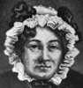Mary Lamb
-
Josephine
-
Mary W. Shelley
Search OCLC WorldCat for this title.
Search Google Books for this title.
Hubbard, Elbert. Three Great Women: Being Little Journeys. East Aurora, NY: Roycrofters, 1908. New York: Wise, 1928.
TOC: Elizabeth Barrett Browning, Jeanne Marie Bouvier de La Motte Guyon, Harriet Martineau. Excerpt of Little Journeys to the Homes of Famous Women.
Search OCLC WorldCat for this title.
Search Google Books for this title.
Hughes, Hugh. Female Characters of Holy Writ: In a Course of Sermons Preached at the Parish Church of St. John's, Clerkenwell. 2nd ser. London: Hamilton, Adams, 1846; Warne, 1866.
TOC: Introduction; Sarah; Miriam; Naomi; Oprah and Ruth; Ruth; The Widow of Sarepta; Mary and Elisabeth; Anna the Prophetess; Mary Magdalene and the Other Ministering Women; The Woman of Canaan; Martha and Mary; Mary and Rhoda; Dorcas; Lydia.
Search OCLC WorldCat for this title.
Search Google Books for this title.
Huie, James A. Records of Female Piety; Comprising Sketches of the Lives and Extracts from the Writings of Women Eminent for Religious Excellence. Edinburgh: Oliver & Boyd; London: Simpkin, Marshall, 1841; 1842. Edinburgh: Oliver & Boyd, 1845.
British Library.
TOC: Monica, Mother of Augustine; Anne Askew; Miriam; Queen Catherine Parr; Olympia Morata; Jane, Queen of Navarre; Lady Mary Langham; Lady Brooke; Queen Mary II; Mrs Bury; Rachel, Lady Russell; Mrs Rowe; Mrs Steel; The Countess of Huntingdon; Lady Glenorchy; Miss Jane Taylor; Mademoiselle Cuvier; Miss Mary Jane Graham; Mrs Hannah More; Mrs Wilson.
Search OCLC WorldCat for this title.
Search Google Books for this title.
Hume, M. Queens of Old Spain. London: Richards, 1906; 1911. New York: McClure, Phillips, 1906; Doubleday, 1911.
TOC: Book I. Isabel the Catholic; Book II. Joan the Mad; Book III. 1. Mary of England. 2. Isabel of Valois; Book IV. 1. Isabel of Bourbon. 2. Mariana of Austria; Book V. 1. Marie Louise of Orleans. 2. Mariana of Neuberg.
Search OCLC WorldCat for this title.
Search Google Books for this title.
Humphrey, Mrs. E. J. Gems of India; or, Sketches of Distinguished Hindoo and Mahomedan Women. New York: Nelson & Phillips; Cincinnati, OH: Hitchcock & Walden, 1875.
TOC: Sanjogata, the Last Ranee of Delhi ; Pudmunee, the Beautiful Cingalese ; Durgavatee, the Warrior Ranee - A Chapter of Mogul History ; Jodh Baie, the Hindoo Sultana - A Chapter of Mogul History ; Chand Sultana - A Chapter of Mogul History ; Noor Mahal, The Light of the Palace - A Chapter of Mogul History ; Mumtaz Mahal - A Chapter of Mogul History ; Ahuliya Baie, the Mahrattee Queen ; Kishna Comaree Baie; or, The Maiden's Sacrifice ; The Ranee of Jhansee - A Tale of the Indian Mutiny ; The Begums of Bhopal ; The Women of India .
Search OCLC WorldCat for this title.
Search Google Books for this title.
Humphrey, Grace. The Story of the Elizabeths. New York: n.p., n.d. Philadelphia: Penn, 1924; 1926.
TOC: Every Inch a King! Elizabeth of England; The First Stars and Stripes: Betsy Ross; The Third Lady of the Land: Elizabeth Schuyler Hamilton; A Race for Powder: Betty Zane; The Angel of the Prisons: Elizabeth Fry; A Poet and the Wife of a Poet: Elizabeth Barrett Browning; In a Quaint Old Cranford: Elizabeth Gaskell; Rub-a-Dub-Dub! Elizabeth Cady Stanton; The Fairy-Story Queen: Elizabeth of Roumania (Carmen Sylva); A Child Favored by God: Saint Elizabeth of Hungary.
Compare other contemporary collections of women who share names.
Search OCLC WorldCat for this title.
Search Google Books for this title.
Hunter, Fannie McDowell, and Aaron Merritt Hills. Women Preachers. Dallas: Berachah, 1905.
NOT:=argument based on biblical interpretation and testimonials or autobiographies of "modern" women preachers. Title page: Mrs. Fannie McDowell Hunter, Fulton, Kentucky. Introduced by Dr. A. M. Hills, President Texas Holiness University, Peniel, Texas. Price 25 cents. Hunter's photograph with signature is the frontispiece. About 100-pp. book with portraits, no table of contents. A dedication "To My Beloved Sisters" indicates that women on blessed missions for the Master "often meet the opposition and scorn of their opponents." Hunter's preface (one page) affirms the biblical support for the right of women to preach. Hills in his one-page introduction approves the book as the best ("unanswerable") argument for the right of women to preach. "The author is herself a preacher of righteousness of extended usefulness, known in many States...May many saintly women be encouraged by the reading of these pages to be obedient to their Heavenly vision." Chapters tracing women preachers in Old and New Testaments and refuting the objections lead to chapter four, "Modern Women Preachers," which quickly moves to Methodists and the Salvation Army (43-45), mentioning specific women such as Mrs. Fletcher. In a paragraph, a former slave Amanda Smith is praised as a preacher (47). Hunter's autobiographical sketch (beginning p. 48) leads a series of first-person life narratives, usually beginning with a portrait, e.g. "My Call to Preach./Mrs. Eliza J. Rutherford. An Ordained Preacher of the Methodist Protestant Church." (65). These narratives sometimes appear as new chapters, but chapter five is Conclusion. "This may be well-called woman's age," Hunter writes after citing the example of Jane Addams. Women participate in almost all occupations. When they can vote, they will pass Prohibition. "Since woman owes her elevation to Christianity, may she show her appreication by rallying around the Cross" (96-98). The volume concludes with a verse debate between blaming Eve for the Fall and blaming Old Adam for misleading her, men for the crucifixion and praising women for their saving role.
Search OCLC WorldCat for this title.
Search Google Books for this title.
Huntington, Faye. Stories of Remarkable Women. Boston: Lothrop, 1887.
TOC: Isabella M. Alden; Rosa Bonheur; Alice Cary; Phoebe Cary; Dorothea Lynde Dix; Esther; Fidelia Fiske; Frances Dana Gage; Mrs. A. H. Hoge; Isabella I; Joan of Arc; Maria Anna Angelina Kaufman; Mary Lyon; Mary Russell Mitford; Harriet Wood Newell; Magaret Fuller Ossoli; Elizabeth Prentiss; Anna Maria Ross; Hannah Whital Smith; Mrs. E. J. Thompson; Victoria; Frances E. Willard; Letitia Youmans.
Search OCLC WorldCat for this title.
Search Google Books for this title.
Hurd-Mead, Kate Campbell, and Elizabeth Burr Thelberg. Medical Women of America: A Short History of the Pioneer Medical Women of America and of a Few of Their Colleagues in England. New York: Froben, 1933.
TOC: Chapter I: Early Midwives in the Colonies. - The Hunt Sisters in Boston. - Medical Education Before 1850 ; Chapter II: New York and London. - Elizabeth Blackwell, M.D., Geneva, New York, 1849. - Emily Blackwell, M.D., Cleveland, Ohio. 1854. - Elizabeth Garrett, Diploma of the Society of Apothecaries, London, 1865; M.D. Paris, 1870 ; Chapter III: Philadelphia. - Ann Preston, M.D., 1852. - Her Diploma from The Female Medical College of Philadelphia. - The First Medical College in the World for Women ; Chapter IV: Boston. - The Work of Marie Zakrzewska, M.D., Cleveland, Ohio, 1856. - The New England Hospital for Women and Children, 1862 ; Chapter V: England and Scotland. - The Work of Sophia Jex Blake, M.D., Berne, Switzerland, 1877 ; Chapter VI: Paris and New York. - Mary Putnam Jacobi, M.D. - Woman's Medical College of Pennsylvania, 1864; Paris, 1871. - Other Medical Schools for Women in America. - Hospitals Founded by and for Medical Women in America. - Women as Medical Students ; Chapter VII: Eclectic, Thomsonian, and Homeopathic Medical Schools. - The Schools at Rochester, New York, and Cleveland, Ohio. - Lydia Folger Fowler, M.D., 1850. - Sarah Adamson Dolley, M.D., 1851. - Rachel Brooks Gleason, M.D., 1851 ; Chapter VIII: The "Regular" Medical School of Cleveland, Ohio. - The First Co-educational Medical School in the United States. - Nancy Talbot Clark, of Boston, the First Graduate, 1852. - Cordelia A. Green, M.D., 1856 ; Chapter IX: The University of Michigan Medical School. - Amanda Sanford, M.D., 1869. - Emma L. Call, M.D., 1873. - Sarah A. Gertrude Banks, M.D., 1873. - Eliza M. Mosher, M.D., 1875 ; Chapter X: The Progress of Medical Women in Professional Work, a Comparison of 1850 and 1930 ; Chapter XI: Admission of Medical Women to Hospital Positions, 1848-1883 ; Chapter XII: Medical Women as Teachers, Investigators, and Lecturers in Medical Schools ; Chapter XIII: Women Admitted to Medical Societies Organized by Men ; Chapter XIV: Women Doctors in Preventive Medicine, Cancer Research, Laboratories. - Dr. Maude E.S. Abbott, Director of the McGill University Medical Museum ; Chapter XV: Women as Surgeons. - Emmeline Horton Cleveland, M.D., 1855, First Woman Ovariotomist in America ; Chapter XVI: Medical Women in the Army and Navy. - Mary E. Walker, M.D., Syracuse University, 1855. - Anita Newcomb McGee, M.D., George Washington University, 1892, and Others ; Chapter XVII: Medical Women in Medico-Social Work at Home and in Foreign Missions. - Clara Swain, the First Medical Missionary, 1869 ; Chapter XVIII: The American Women's Hospitals. - A Committee of the Medical Women's National Association ; Chapter XIX: Medical Women as Writers of Scientific or Popular Books, or Articles for Journals ; Chapter XX: Statistics as to the Personnel of the Medical Women's National Association as Gathered from a Questionnaire Sent to Its Members in 1931 ; Chapter XXI: Conclusions and Summary .
Hurd-Mead (M.D.) is the former president of the Medical Women's National Association of the United States, and her portrait appears with others on p. 105, though she is not in the index. In the back of the book, before the index of names, several glossy pages provide portraits, some painted and some photographic, of many of the individual medical women mentioned in the text, with a few scenes in hospitals or images of buildings. After the table of contents, "Advance Subscribers" lists many women doctors, a few institutions (and Barnes & Noble) who ordered the 200 subscriptions needed to make the publication possible. Hurd-Mead clearly conducted extensive biographical research (some cited in footnotes).
Search OCLC WorldCat for this title.
Search Google Books for this title.